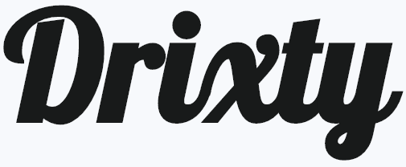

Our websites design is functional and practical, an emphasis being on ease of use. During the development of the application we made use of a range of standard view design elements included standardised navigation elements on each page, consistent layouts across pages, etc. We made extensive use of styling through using CSS in order to ensure consistent look and feel throughout the site.
We have endevoured to maintain a professional approach to project management, through use of a range of tools and techniques to allow us to complete the project and fufil its goals to a high standard. Due to the small size of the team for this project, we didn't feel the need to make use of a particular project management methodology, though I do feel in future a project of this nature could benefit from some limited Sprint style task planning. We were careful to ensure that our work was regularly backed up, and we used a Git respository hosted on GitHub for version control of the application. This greately eased collaborating together on the application.
The project have been completed to a resonably high standard and the initial goals of the project has been met. We have been able to learn a lot from this project, both in terms of management of a web development project of this size and in terms of the technologies and tools we have learnt to use during the project. We worked well as a team but I believe the project has given us guidance on better ways to manage projects of this manner in the future.
Reflecting on our choice of technology and architecture for the application, I feel that it would have been interesting to have developed the website using ASP.NET. ASP.NET is a web framework based on the .NET application platform offered by Microsoft. ASP.NET was the framework used as a teaching example throughout the project, and we may have had access to more support during the project as a result. However I feel that Express.JS offered a more lightweight framework, which I feel was more important to our application due to the relative simplicity of the concept.
